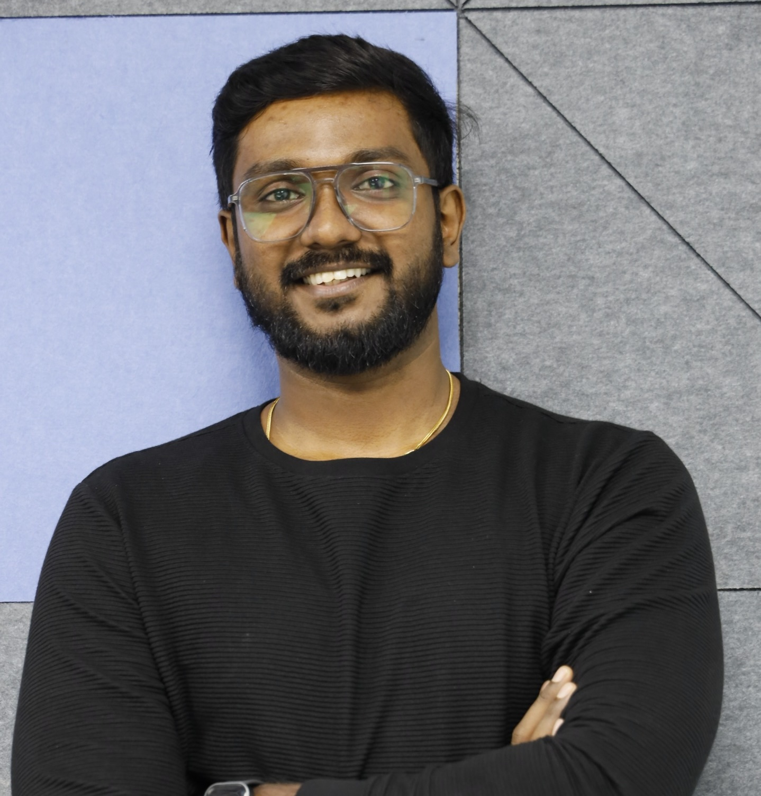

Profile
My story.
I work with founders, teams, and media to bring Kerala's startup ecosystem to a wider audience. My work spans social strategy, PR, event coverage, and editorial publishing.
Social Media & PR
Open to strategic rolesI lead social media at Kerala Startup Mission and handle PR activities. I turn startup stories into campaigns, press updates, and conversations.

I bring startup stories to social feeds, press, and publications.
Profile
I work with founders, teams, and media to bring Kerala's startup ecosystem to a wider audience. My work spans social strategy, PR, event coverage, and editorial publishing.
What I Do
Expertise
Campaign Portfolio
A selection of my work across events, brands, and the startup ecosystem.
I plan the story, coordinate the campaign, and keep the conversation going.
I write and curate startup stories, newsletters, and reports.
Explore Kerala Startup Mission MagazineProfessional Experience
Recognition
I presented KSUM's social media work for the Kerala State e-Governance Awards 2021-22 & 2022-23.
I am part of Huddle Global's marketing, social media, and design leadership team.
I build campaigns across digital channels, events, and media.
I earned a Top 10 rank in the MA programme at Kerala University.
Education, Certifications & Tools
Web projects
Contact
Trivandrum, Kerala, India
Anoop Ambika, CEO, Kerala Startup Mission
ceo@startupmission.in